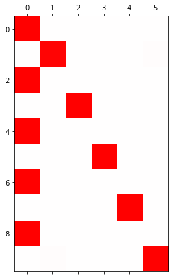
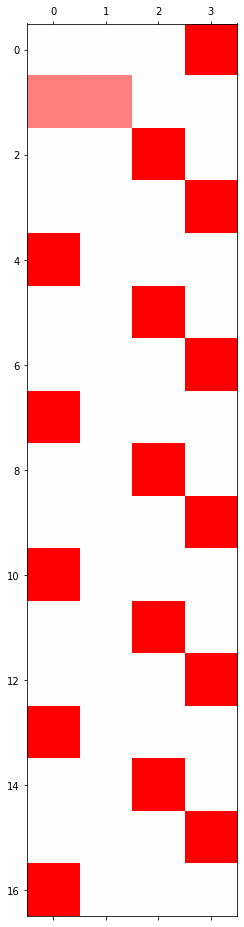

import torch
import pandas as pd
import matplotlib.pyplot as plt
from fastai.text.all import *
import pytorch_lightning as pl 순환신경망 minor topics
강의영상
https://youtube.com/playlist?list=PLQqh36zP38-zvqUvbaN9PkKWMHadj8B3W
imports
Define some funtions
def f(txt,mapping):
return [mapping[key] for key in txt]
sig = torch.nn.Sigmoid()
soft = torch.nn.Softmax(dim=1)
tanh = torch.nn.Tanh()순환신경망 표현력 비교실험 (1)
data: abcabC
txt = list('abcabC')*100
txt[:8]
txt_x = txt[:-1]
txt_y = txt[1:]mapping = {'a':0,'b':1,'c':2,'C':3}
x= torch.nn.functional.one_hot(torch.tensor(f(txt_x,mapping))).float()
y= torch.nn.functional.one_hot(torch.tensor(f(txt_y,mapping))).float()x = x.to("cuda:0")
y = y.to("cuda:0") x.shapetorch.Size([599, 4])실험
- 실험1
HIDDEN = 3fig, ax = plt.subplots(5,5,figsize=(10,10))
for i in range(5):
for j in range(5):
rnn = torch.nn.RNN(4,HIDDEN).to("cuda:0")
linr = torch.nn.Linear(HIDDEN,4).to("cuda:0")
loss_fn = torch.nn.CrossEntropyLoss()
optimizr = torch.optim.Adam(list(rnn.parameters())+list(linr.parameters()),lr=0.1)
_water = torch.zeros(1,HIDDEN).to("cuda:0")
for epoc in range(500):
## 1
hidden, hT = rnn(x,_water)
output = linr(hidden)
## 2
loss = loss_fn(output,y)
## 3
loss.backward()
## 4
optimizr.step()
optimizr.zero_grad()
yhat=soft(output)
combind = torch.concat([hidden,yhat],axis=1)
ax[i][j].matshow(combind.to("cpu").data[-6:],cmap='bwr',vmin=-1,vmax=1)
fig.suptitle("experiment1: RNN with {} hidden nodes".format(HIDDEN),size=20)
fig.tight_layout()- 실험2
HIDDEN = 4fig, ax = plt.subplots(5,5,figsize=(10,10))
for i in range(5):
for j in range(5):
rnn = torch.nn.RNN(4,HIDDEN).to("cuda:0")
linr = torch.nn.Linear(HIDDEN,4).to("cuda:0")
loss_fn = torch.nn.CrossEntropyLoss()
optimizr = torch.optim.Adam(list(rnn.parameters())+list(linr.parameters()),lr=0.1)
_water = torch.zeros(1,HIDDEN).to("cuda:0")
for epoc in range(500):
## 1
hidden, hT = rnn(x,_water)
output = linr(hidden)
## 2
loss = loss_fn(output,y)
## 3
loss.backward()
## 4
optimizr.step()
optimizr.zero_grad()
yhat=soft(output)
combind = torch.concat([hidden,yhat],axis=1)
ax[i][j].matshow(combind.to("cpu").data[-6:],cmap='bwr',vmin=-1,vmax=1)
fig.suptitle("experiment2: RNN with {} hidden nodes".format(HIDDEN),size=20)
fig.tight_layout()- 실험3
HIDDEN = 8fig, ax = plt.subplots(5,5,figsize=(10,8))
for i in range(5):
for j in range(5):
rnn = torch.nn.RNN(4,HIDDEN).to("cuda:0")
linr = torch.nn.Linear(HIDDEN,4).to("cuda:0")
loss_fn = torch.nn.CrossEntropyLoss()
optimizr = torch.optim.Adam(list(rnn.parameters())+list(linr.parameters()),lr=0.1)
_water = torch.zeros(1,HIDDEN).to("cuda:0")
for epoc in range(500):
## 1
hidden, hT = rnn(x,_water)
output = linr(hidden)
## 2
loss = loss_fn(output,y)
## 3
loss.backward()
## 4
optimizr.step()
optimizr.zero_grad()
yhat=soft(output)
combind = torch.concat([hidden,yhat],axis=1)
ax[i][j].matshow(combind.to("cpu").data[-6:],cmap='bwr',vmin=-1,vmax=1)
fig.suptitle("experiment3: RNN with {} hidden nodes".format(HIDDEN),size=20)
fig.tight_layout()결론
- 노드수가 많으면 학습에 유리함
순환신경망 표현력 비교실험 (2)
data: ab(c,C)
# torch.manual_seed(43052)
# txta = 'a'*50
# txtb = 'b'*50
# prob_upper = torch.bernoulli(torch.zeros(50)+0.5)
# txtc = list(map(lambda x: 'c' if x==1 else 'C', prob_upper))
# txt = ''.join([txta[i]+','+txtb[i]+','+txtc[i]+',' for i in range(50)]).split(',')[:-1]
# txt_x = txt[:-1]
# txt_y = txt[1:]
# pd.DataFrame({'txt_x':txt_x,'txt_y':txt_y}).to_csv("2022-11-25-ab(c,C).csv",index=False)df= pd.read_csv("https://raw.githubusercontent.com/guebin/DL2022/main/posts/IV.%20RNN/2022-11-25-ab(c%2CC).csv")
df| txt_x | txt_y | |
|---|---|---|
| 0 | a | b |
| 1 | b | c |
| 2 | c | a |
| 3 | a | b |
| 4 | b | c |
| ... | ... | ... |
| 144 | a | b |
| 145 | b | C |
| 146 | C | a |
| 147 | a | b |
| 148 | b | c |
149 rows × 2 columns
mapping = {'a':0,'b':1,'c':2,'C':3}
x= torch.nn.functional.one_hot(torch.tensor(f(df.txt_x,mapping))).float()
y= torch.nn.functional.one_hot(torch.tensor(f(df.txt_y,mapping))).float()x = x.to("cuda:0")
y = y.to("cuda:0") 실험
- 실험1
HIDDEN = 3fig, ax = plt.subplots(5,5,figsize=(10,10))
for i in range(5):
for j in range(5):
lstm = torch.nn.LSTM(4,HIDDEN).to("cuda:0")
linr = torch.nn.Linear(HIDDEN,4).to("cuda:0")
loss_fn = torch.nn.CrossEntropyLoss()
optimizr = torch.optim.Adam(list(lstm.parameters())+list(linr.parameters()),lr=0.1)
_water = torch.zeros(1,HIDDEN).to("cuda:0")
for epoc in range(500):
## 1
hidden, (hT,cT) = lstm(x,(_water,_water))
output = linr(hidden)
## 2
loss = loss_fn(output,y)
## 3
loss.backward()
## 4
optimizr.step()
optimizr.zero_grad()
yhat=soft(output)
combinded = torch.concat([yhat,y],axis=1)
ax[i][j].matshow(combinded.to("cpu").data[-6:],cmap='bwr',vmin=-1,vmax=1)
fig.suptitle("experiment1: LSTM with {} hidden nodes".format(HIDDEN),size=20)
fig.tight_layout()
# 2행 4열->과적합되어있음.. c,C 확실히 알수 없는데 확실하게 맞추고있네? -> 과적합이라고 보자!- 실험2
HIDDEN = 16fig, ax = plt.subplots(5,5,figsize=(10,10))
for i in range(5):
for j in range(5):
lstm = torch.nn.LSTM(4,HIDDEN).to("cuda:0")
linr = torch.nn.Linear(HIDDEN,4).to("cuda:0")
loss_fn = torch.nn.CrossEntropyLoss()
optimizr = torch.optim.Adam(list(lstm.parameters())+list(linr.parameters()),lr=0.1)
_water = torch.zeros(1,HIDDEN).to("cuda:0")
for epoc in range(500):
## 1
hidden, (hT,cT) = lstm(x,(_water,_water))
output = linr(hidden)
## 2
loss = loss_fn(output,y)
## 3
loss.backward()
## 4
optimizr.step()
optimizr.zero_grad()
yhat=soft(output)
combinded = torch.concat([yhat,y],axis=1)
ax[i][j].matshow(combinded.to("cpu").data[-6:],cmap='bwr',vmin=-1,vmax=1)
fig.suptitle("experiment2: LSTM with {} hidden nodes".format(HIDDEN),size=20)
fig.tight_layout()결론
- 노드수가 너무 많으면 오버피팅 경향도 있음
문자열에서 단어로
data: human numbers 5
txt = (['one',',','two',',','three',',','four',',','five',',']*100)[:-1]mapping = {',':0, 'one':1, 'two':2, 'three':3, 'four':4, 'five':5}
mapping{',': 0, 'one': 1, 'two': 2, 'three': 3, 'four': 4, 'five': 5}txt_x = txt[:-1]
txt_y = txt[1:] txt_x[0:5], txt_y[0:5](['one', ',', 'two', ',', 'three'], [',', 'two', ',', 'three', ','])x = torch.nn.functional.one_hot(torch.tensor(f(txt_x,mapping))).float().to("cuda:0")
y = torch.nn.functional.one_hot(torch.tensor(f(txt_y,mapping))).float().to("cuda:0")torch를 이용한 learn
torch.manual_seed(43052)
lstm = torch.nn.LSTM(6,20).to("cuda:0") #히든레이어 20개
linr = torch.nn.Linear(20,6).to("cuda:0")
loss_fn = torch.nn.CrossEntropyLoss() #손실함수 적당히 정의해주기
optimizr = torch.optim.Adam(list(lstm.parameters())+list(linr.parameters()),lr=0.1)_water = torch.zeros(1,20).to("cuda:0")
for epoc in range(50):
## 1
hidden, (hT,cT) =lstm(x,(_water,_water))
output = linr(hidden)
## 2
loss = loss_fn(output,y)
## 3
loss.backward()
## 4
optimizr.step()
optimizr.zero_grad() plt.matshow(soft(output).data[-10:].to("cpu"),cmap='bwr',vmin=-1,vmax=1)<matplotlib.image.AxesImage at 0x7f6bbf69b890>
fastai 이용한 learn
ds1 = torch.utils.data.TensorDataset(x,y)
ds2 = torch.utils.data.TensorDataset(x,y) # dummy
dl1 = torch.utils.data.DataLoader(ds1,batch_size=998) #X의 full batch사이즈임
dl2 = torch.utils.data.DataLoader(ds2,batch_size=998) # dummy #test에 해당하는 거.. 그냥 트레이닝이랑 똑같이 만들자. dls가 두개를 이용해서 만들어야 하니까
dls = DataLoaders(dl1,dl2) #데이터로드 두개를 이용해서 만들어야 한다.# lrnr=Learner(dls,net,loss_fn) 이렇게 하려고 했는데
# loss_fn은 만들 수 있어
# 근데 net에서.. 두개의 네트워크를 같이 쓰고 있으니까 이걸 하나의 네트워크로 통일해서 넣기가 애매하다. lstm을 넣어야할지? linear를 넣어야할지? 애매함.
# 두개이 연속동작을 한번에 해야해
# class이용해서 해보자!class MyLSTM(torch.nn.Module):
def __init__(self):
super().__init__()
self.lstm = torch.nn.LSTM(6,20)
self.linr = torch.nn.Linear(20,6)
def forward(self,x):
_water = torch.zeros(1,20).to("cuda:0")
hidden, (hT,cT) =self.lstm(x,(_water,_water))
output = self.linr(hidden)
return output net = MyLSTM().to("cuda:0")
loss_fn = torch.nn.CrossEntropyLoss()lrnr = Learner(dls,net,loss_fn,lr=0.1)lrnr.fit(50)| epoch | train_loss | valid_loss | time |
|---|---|---|---|
| 0 | 1.918821 | 1.547683 | 00:00 |
| 1 | 1.731377 | 1.771274 | 00:00 |
| 2 | 1.744945 | 1.490624 | 00:00 |
| 3 | 1.679425 | 1.400951 | 00:00 |
| 4 | 1.621457 | 1.431488 | 00:00 |
| 5 | 1.588175 | 1.398044 | 00:00 |
| 6 | 1.559340 | 1.291965 | 00:00 |
| 7 | 1.523507 | 1.127941 | 00:00 |
| 8 | 1.475921 | 0.959611 | 00:00 |
| 9 | 1.419471 | 0.861778 | 00:00 |
| 10 | 1.363497 | 0.815888 | 00:00 |
| 11 | 1.312624 | 0.780459 | 00:00 |
| 12 | 1.266544 | 0.742232 | 00:00 |
| 13 | 1.223979 | 0.715809 | 00:00 |
| 14 | 1.185103 | 0.671282 | 00:00 |
| 15 | 1.147897 | 0.620188 | 00:00 |
| 16 | 1.111588 | 0.575581 | 00:00 |
| 17 | 1.076424 | 0.529901 | 00:00 |
| 18 | 1.042135 | 0.475089 | 00:00 |
| 19 | 1.008015 | 0.418487 | 00:00 |
| 20 | 0.973913 | 0.368120 | 00:00 |
| 21 | 0.940148 | 0.322788 | 00:00 |
| 22 | 0.906926 | 0.285818 | 00:00 |
| 23 | 0.874595 | 0.254371 | 00:00 |
| 24 | 0.843313 | 0.218208 | 00:00 |
| 25 | 0.812716 | 0.187723 | 00:00 |
| 26 | 0.782985 | 0.158780 | 00:00 |
| 27 | 0.754088 | 0.133884 | 00:00 |
| 28 | 0.726112 | 0.112403 | 00:00 |
| 29 | 0.699107 | 0.093460 | 00:00 |
| 30 | 0.673082 | 0.075678 | 00:00 |
| 31 | 0.647987 | 0.059713 | 00:00 |
| 32 | 0.623807 | 0.047068 | 00:00 |
| 33 | 0.600592 | 0.037162 | 00:00 |
| 34 | 0.578363 | 0.029585 | 00:00 |
| 35 | 0.557125 | 0.023816 | 00:00 |
| 36 | 0.536864 | 0.019337 | 00:00 |
| 37 | 0.517551 | 0.015811 | 00:00 |
| 38 | 0.499145 | 0.013043 | 00:00 |
| 39 | 0.481606 | 0.010892 | 00:00 |
| 40 | 0.464891 | 0.009220 | 00:00 |
| 41 | 0.448957 | 0.007893 | 00:00 |
| 42 | 0.433761 | 0.006812 | 00:00 |
| 43 | 0.419261 | 0.005925 | 00:00 |
| 44 | 0.405417 | 0.005203 | 00:00 |
| 45 | 0.392191 | 0.004621 | 00:00 |
| 46 | 0.379547 | 0.004154 | 00:00 |
| 47 | 0.367454 | 0.003775 | 00:00 |
| 48 | 0.355879 | 0.003463 | 00:00 |
| 49 | 0.344794 | 0.003202 | 00:00 |
plt.matshow(soft(lrnr.model(x)[-10:]).data.to("cpu"),cmap = 'bwr', vmin=-1,vmax=1)<matplotlib.image.AxesImage at 0x7f6bbbb779d0>똑같은 코드들: torch.nn.LSTM
data: hi?hello!!
txt = list('hi?hello!!')*100
txt_x = txt[:-1]
txt_y = txt[1:]mapping = {'!':0, '?':1,'h':2,'i':3,'e':4,'l':5,'o':6}
x= torch.nn.functional.one_hot(torch.tensor(f(txt_x,mapping))).float().to("cuda:0")
y= torch.nn.functional.one_hot(torch.tensor(f(txt_y,mapping))).float().to("cuda:0")세트1: _water의 생략
- 코드1: 정석코드
torch.manual_seed(43052)
lstm = torch.nn.LSTM(7,4).to("cuda:0")_water = torch.zeros(1,4).to("cuda:0")
lstm(x, (_water,_water))(tensor([[-0.1547, 0.0673, 0.0695, 0.1563],
[-0.0786, -0.1430, -0.0250, 0.1189],
[-0.0300, -0.2256, -0.1324, 0.1439],
...,
[-0.0723, 0.0620, 0.1913, 0.2015],
[-0.1155, 0.0746, 0.1747, 0.2938],
[-0.2350, -0.1559, -0.1093, 0.2682]], device='cuda:0',
grad_fn=<SqueezeBackward1>),
(tensor([[-0.2350, -0.1559, -0.1093, 0.2682]], device='cuda:0',
grad_fn=<SqueezeBackward1>),
tensor([[-0.4451, -0.2456, -0.1900, 0.6232]], device='cuda:0',
grad_fn=<SqueezeBackward1>)))# 히든레이거 값
# HT
# CT- 코드2: _water 는 사실 없어도 괜찮았어..
torch.manual_seed(43052)
lstm = torch.nn.LSTM(7,4).to("cuda:0")lstm(x)(tensor([[-0.1547, 0.0673, 0.0695, 0.1563],
[-0.0786, -0.1430, -0.0250, 0.1189],
[-0.0300, -0.2256, -0.1324, 0.1439],
...,
[-0.0723, 0.0620, 0.1913, 0.2015],
[-0.1155, 0.0746, 0.1747, 0.2938],
[-0.2350, -0.1559, -0.1093, 0.2682]], device='cuda:0',
grad_fn=<SqueezeBackward1>),
(tensor([[-0.2350, -0.1559, -0.1093, 0.2682]], device='cuda:0',
grad_fn=<SqueezeBackward1>),
tensor([[-0.4451, -0.2456, -0.1900, 0.6232]], device='cuda:0',
grad_fn=<SqueezeBackward1>)))세트2: x.shape = (\(L\), \(H_{in}\)) or (\(L\),\(N\),\(H_{in}\))
- 파라메터 설명
- \(L\) = sequece length = 시계열의 길이 = 간장을 몇 년 전통으로 이어갈지 (time시리지의 length)
- \(N\) = batch size = 전체데이터는 몇 개의 시계열이 있는지 = 전체 데이터를 몇개의 시계열로 쪼갤지 <– 왜 이걸 해야해?
- \(H_{in}\) = input_size = 시점을 고정하였을 경우 입력자료의 차원 = 입력시계열이 시점별로 몇개의 변수로 나타내어 지는지? = 만약에 원핫인코딩으로 단어를 정리하면 단어수를 의미함
# x.shape = [999,7] <- len가 999이고 구별되는 것이 7개
# 7개 이거를 Hin으로 생각..
# Hin: Hnet 라고 생각..
# x,shape=[999,N,Hin] 이렇게 생긴 N이 있대
# Hin "시점을 고정했을때" 만약 x[0] = 0., 0., 1., 0., 0., h를 2로 맵핑했으니까 저 1은 h를 의미해
# 즉 하나의 시점에는 7개 차원인 정보들에 대한 입력..!
# 만약 x.shape=[1000,7] dlaus 1000x7인데, 반으로 쪼개서 500x7, 500x7로 만들면 여기서 N=2이다.
# 지금우리는 쪼개고 있지 않고 N=1로ㅓ만 진행하눈중 - 코드2: _water 는 사실 없어도 괜찮았어..
torch.manual_seed(43052)
lstm = torch.nn.LSTM(7,4).to("cuda:0")lstm(x)(tensor([[-0.1547, 0.0673, 0.0695, 0.1563],
[-0.0786, -0.1430, -0.0250, 0.1189],
[-0.0300, -0.2256, -0.1324, 0.1439],
...,
[-0.0723, 0.0620, 0.1913, 0.2015],
[-0.1155, 0.0746, 0.1747, 0.2938],
[-0.2350, -0.1559, -0.1093, 0.2682]], device='cuda:0',
grad_fn=<SqueezeBackward1>),
(tensor([[-0.2350, -0.1559, -0.1093, 0.2682]], device='cuda:0',
grad_fn=<SqueezeBackward1>),
tensor([[-0.4451, -0.2456, -0.1900, 0.6232]], device='cuda:0',
grad_fn=<SqueezeBackward1>)))- 코드3: x의 차원은 사실 엄밀하게는 (\(L\),\(N\),\(H_{in}\)) 와 같다…
torch.manual_seed(43052)
lstm = torch.nn.LSTM(7,4).to("cuda:0")lstm(x.reshape(999,1,7))
# lstm(x) 한것과 같은 숫자가 나온당.
# batch_first=False가 기본 (tensor([[[-0.1547, 0.0673, 0.0695, 0.1563]],
[[-0.0786, -0.1430, -0.0250, 0.1189]],
[[-0.0300, -0.2256, -0.1324, 0.1439]],
...,
[[-0.0723, 0.0620, 0.1913, 0.2015]],
[[-0.1155, 0.0746, 0.1747, 0.2938]],
[[-0.2350, -0.1559, -0.1093, 0.2682]]], device='cuda:0',
grad_fn=<CudnnRnnBackward0>),
(tensor([[[-0.2350, -0.1559, -0.1093, 0.2682]]], device='cuda:0',
grad_fn=<CudnnRnnBackward0>),
tensor([[[-0.4451, -0.2456, -0.1900, 0.6232]]], device='cuda:0',
grad_fn=<CudnnRnnBackward0>)))- 코드4: batch_first=True옵션을 사용하여 lstm을 만든경우
torch.manual_seed(43052)
lstm = torch.nn.LSTM(7,4,batch_first=True).to("cuda:0")# lstm(x.reshape(999,1,7)) 하면 값이 이상하게 나온다!
# batch_first=true옵션을 사용하면 (N,L,Hin) 으로 써줘야 한당. lstm(x.reshape(1,999,7))(tensor([[[-0.1547, 0.0673, 0.0695, 0.1563],
[-0.0786, -0.1430, -0.0250, 0.1189],
[-0.0300, -0.2256, -0.1324, 0.1439],
...,
[-0.0723, 0.0620, 0.1913, 0.2015],
[-0.1155, 0.0746, 0.1747, 0.2938],
[-0.2350, -0.1559, -0.1093, 0.2682]]], device='cuda:0',
grad_fn=<CudnnRnnBackward0>),
(tensor([[[-0.2350, -0.1559, -0.1093, 0.2682]]], device='cuda:0',
grad_fn=<CudnnRnnBackward0>),
tensor([[[-0.4451, -0.2456, -0.1900, 0.6232]]], device='cuda:0',
grad_fn=<CudnnRnnBackward0>)))똑같은 코드들: torch.nn.LSTMCell
data: hi?hello!!
txt = list('hi?hello!!')*100
txt_x = txt[:-1]
txt_y = txt[1:]mapping = {'!':0, '?':1,'h':2,'i':3,'e':4,'l':5,'o':6}
x= torch.nn.functional.one_hot(torch.tensor(f(txt_x,mapping))).float().to("cuda:0")
y= torch.nn.functional.one_hot(torch.tensor(f(txt_y,mapping))).float().to("cuda:0")세트1: _water의 생략
- 코드1: 정석코드
torch.manual_seed(43052)
lstmcell = torch.nn.LSTMCell(7,4).to("cuda:0") xt = x[[1]]
_water = torch.zeros(1,4).to("cuda:0")
xt.shape, _water.shape(torch.Size([1, 7]), torch.Size([1, 4]))lstmcell(xt,(_water,_water))(tensor([[-0.0290, -0.1758, -0.0537, 0.0598]], device='cuda:0',
grad_fn=<ThnnFusedLstmCellBackward0>),
tensor([[-0.0582, -0.4566, -0.1256, 0.1922]], device='cuda:0',
grad_fn=<ThnnFusedLstmCellBackward0>))- 코드2: _water의 생략
torch.manual_seed(43052)
lstmcell = torch.nn.LSTMCell(7,4).to("cuda:0") xt = x[[1]]
xt.shapetorch.Size([1, 7])lstmcell(xt)(tensor([[-0.0290, -0.1758, -0.0537, 0.0598]], device='cuda:0',
grad_fn=<ThnnFusedLstmCellBackward0>),
tensor([[-0.0582, -0.4566, -0.1256, 0.1922]], device='cuda:0',
grad_fn=<ThnnFusedLstmCellBackward0>))세트2: xt.shape = (\(N\),\(H_{in}\)) or (\(H_{in}\))
- 코드2: _water의 생략
torch.manual_seed(43052)
lstmcell = torch.nn.LSTMCell(7,4).to("cuda:0") xt = x[[1]]
xt.shapetorch.Size([1, 7])lstmcell(xt)(tensor([[-0.0290, -0.1758, -0.0537, 0.0598]], device='cuda:0',
grad_fn=<ThnnFusedLstmCellBackward0>),
tensor([[-0.0582, -0.4566, -0.1256, 0.1922]], device='cuda:0',
grad_fn=<ThnnFusedLstmCellBackward0>))- 코드3:
torch.manual_seed(43052)
lstmcell = torch.nn.LSTMCell(7,4).to("cuda:0") xt = x[1]
xt.shapetorch.Size([7])lstmcell(xt)(tensor([-0.0290, -0.1758, -0.0537, 0.0598], device='cuda:0',
grad_fn=<SqueezeBackward1>),
tensor([-0.0582, -0.4566, -0.1256, 0.1922], device='cuda:0',
grad_fn=<SqueezeBackward1>))Summary
똑같은 코드들 정리
- 원래 1은 단순히 observation의 차원이 아니다. 즉 \({\bf X}_{n \times p}\)에서 \(n\)에 대응하는 차원으로 생각할 수 없다.
- 그런데 (1) 단방향 (2) 조각내지 않은 시계열 (3) 중첩하지 않은 순환망에 한정하여서는 observation 처럼 생각해도 무방하다. <– 엄밀하게는 이게 위험한 생각임. 하지만 정식으로 모두 따지려면 너무 헷갈림
실제구현시 기억할 것
- 현실적으로 (1)-(3)이 아닌 조건에서는 Cell 단위로 연산을 이용할 일이 없다. (느리거든요) // 그냥 이해용으로 구현
- torch.nn.RNN 혹은 torch.nn.LSTM 으로 네트워크를 구성할시 _water의 dim을 명시할 일도 없다.
- 오로지 고려해야 할 것은 입력시계열을 조각낼지 조각내지 않을지
조각난 시계열로 학습
data
txt = list('hi!')*3 + list('hi?')*3 조각내지 않은 시계열
txt_x = txt[:-1]
txt_y = txt[1:] mapping = {'!':0, '?':1, 'h':2, 'i':3}
x = torch.nn.functional.one_hot(torch.tensor(f(txt_x,mapping))).float().to("cuda:0")
y = torch.nn.functional.one_hot(torch.tensor(f(txt_y,mapping))).float().to("cuda:0")torch.manual_seed(43052)
lstm = torch.nn.LSTM(4,10).to("cuda:0")
linr = torch.nn.Linear(10,4).to("cuda:0")loss_fn = torch.nn.CrossEntropyLoss()
optimizr = torch.optim.Adam(list(lstm.parameters())+list(linr.parameters()),lr=0.1)for epoc in range(100):
## 1
hidden, _ = lstm(x)
output = linr(hidden)
## 2
loss = loss_fn(output,y)
## 3
loss.backward()
## 4
optimizr.step()
optimizr.zero_grad()plt.matshow(soft(output)).to("cpu").data,cmap='bwr',vmin=-1,vmax=1)
# 이것도 밑 그래프랑 같은! hidden, _ = lstm(x)
plt.matshow(soft(linr(hidden)).to("cpu").data,cmap='bwr',vmin=-1,vmax=1)<matplotlib.image.AxesImage at 0x7f6b994a6f50>
조각난 시계열
txt1= txt[:9]
txt2= txt[9:]txt1,txt2(['h', 'i', '!', 'h', 'i', '!', 'h', 'i', '!'],
['h', 'i', '?', 'h', 'i', '?', 'h', 'i', '?'])txt1_x = txt1[:-1]
txt1_y = txt1[1:]
txt2_x = txt2[:-1]
txt2_y = txt2[1:] mapping = {'!':0, '?':1, 'h':2, 'i':3}
x1 = torch.nn.functional.one_hot(torch.tensor(f(txt1_x,mapping))).float().to("cuda:0")
y1 = torch.nn.functional.one_hot(torch.tensor(f(txt1_y,mapping))).float().to("cuda:0")
x2 = torch.nn.functional.one_hot(torch.tensor(f(txt2_x,mapping))).float().to("cuda:0")
y2 = torch.nn.functional.one_hot(torch.tensor(f(txt2_y,mapping))).float().to("cuda:0")x1.shape, y1.shape, x2.shape, y2.shape(torch.Size([8, 4]),
torch.Size([8, 4]),
torch.Size([8, 4]),
torch.Size([8, 4]))xx = torch.stack([x1,x2],axis=1) # x1과 x2를 합치자
yy = torch.stack([y1,y2],axis=1)
xx.shape, yy.shape(torch.Size([8, 2, 4]), torch.Size([8, 2, 4]))torch.manual_seed(43052)
lstm = torch.nn.LSTM(4,10).to("cuda:0")
linr = torch.nn.Linear(10,4).to("cuda:0")loss_fn = torch.nn.CrossEntropyLoss()
optimizr = torch.optim.Adam(list(lstm.parameters())+list(linr.parameters()),lr=0.1)for epoc in range(100):
## 1
hidden, _ = lstm(xx)
output = linr(hidden)
## 2
loss = loss_fn(output[:,0,:],yy[:,0,:]) + loss_fn(output[:,1,:],yy[:,1,:])
# (8,4), (8,4)가 stack되어있는데 첫번째 스택 봅고. yy도 뽑고.. 그럼 로스가 한번 계산이 되는데 다시 로스를 더하면
## 3
loss.backward()
## 4
optimizr.step()
optimizr.zero_grad()fig , ax = plt.subplots(1,2)
ax[0].matshow(soft(output[:,0,:]).to("cpu").data,cmap='bwr',vmin=-1,vmax=1)
ax[1].matshow(soft(output[:,1,:]).to("cpu").data,cmap='bwr',vmin=-1,vmax=1)<matplotlib.image.AxesImage at 0x7f6b70111650>
hidden, _ = lstm(x)
plt.matshow(soft(linr(hidden)).to("cpu").data,cmap='bwr',vmin=-1,vmax=1)<matplotlib.image.AxesImage at 0x7f6b70111350>
- 조각난 시계열로 학습한 경우는 hi!에서 hi?로 바뀔 수 없다. 왜냐햐면 그러한 연결정보가 끊어져 있으니까
재미있는 실험
- x1만 배운다면?
torch.manual_seed(43052)
lstm = torch.nn.LSTM(4,10).to("cuda:0")
linr = torch.nn.Linear(10,4).to("cuda:0")loss_fn = torch.nn.CrossEntropyLoss()
optimizr = torch.optim.Adam(list(lstm.parameters())+list(linr.parameters()),lr=0.1)for epoc in range(100):
## 1
hidden, _ = lstm(x1)
output = linr(hidden)
## 2
loss = loss_fn(output,y1)
## 3
loss.backward()
## 4
optimizr.step()
optimizr.zero_grad()hidden, _ = lstm(x2)
plt.matshow(soft(linr(hidden)).to("cpu").data,cmap='bwr',vmin=-1,vmax=1)<matplotlib.image.AxesImage at 0x7f6b701ba890>
- x2만 배운다면?
torch.manual_seed(43052)
lstm = torch.nn.LSTM(4,10).to("cuda:0")
linr = torch.nn.Linear(10,4).to("cuda:0")loss_fn = torch.nn.CrossEntropyLoss()
optimizr = torch.optim.Adam(list(lstm.parameters())+list(linr.parameters()),lr=0.1)for epoc in range(100):
## 1
hidden, _ = lstm(x2)
output = linr(hidden)
## 2
loss = loss_fn(output,y2)
## 3
loss.backward()
## 4
optimizr.step()
optimizr.zero_grad()hidden, _ = lstm(x1)
plt.matshow(soft(linr(hidden)).to("cpu").data,cmap='bwr',vmin=-1,vmax=1)<matplotlib.image.AxesImage at 0x7f6b9809ef50>
똑같은 코드들 fastai, pytorch
data: human numbers 5
txt = (['one',',','two',',','three',',','four',',','five',',']*100)[:-1]mapping = {',':0, 'one':1, 'two':2, 'three':3, 'four':4, 'five':5}
mapping{',': 0, 'one': 1, 'two': 2, 'three': 3, 'four': 4, 'five': 5}txt_x = txt[:-1]
txt_y = txt[1:] txt_x[0:5], txt_y[0:5](['one', ',', 'two', ',', 'three'], [',', 'two', ',', 'three', ','])x = torch.nn.functional.one_hot(torch.tensor(f(txt_x,mapping))).float().to("cuda:0")
y = torch.nn.functional.one_hot(torch.tensor(f(txt_y,mapping))).float().to("cuda:0")fastai 이용한 learn
ds1 = torch.utils.data.TensorDataset(x,y)
ds2 = torch.utils.data.TensorDataset(x,y) # dummy
dl1 = torch.utils.data.DataLoader(ds1,batch_size=998)
dl2 = torch.utils.data.DataLoader(ds2,batch_size=998) # dummy
dls = DataLoaders(dl1,dl2) class MyLSTM(torch.nn.Module):
def __init__(self):
super().__init__()
torch.manual_seed(43052)
self.lstm = torch.nn.LSTM(6,20)
self.linr = torch.nn.Linear(20,6)
def forward(self,x):
_water = torch.zeros(1,20).to("cuda:0")
hidden, (hT,cT) =self.lstm(x,(_water,_water))
output = self.linr(hidden)
return output net = MyLSTM().to("cuda:0")
loss_fn = torch.nn.CrossEntropyLoss()lrnr = Learner(dls,net,loss_fn,lr=0.1)lrnr.fit(10)| epoch | train_loss | valid_loss | time |
|---|---|---|---|
| 0 | 1.762846 | 1.502211 | 00:00 |
| 1 | 1.631212 | 1.620583 | 00:00 |
| 2 | 1.627597 | 1.443686 | 00:00 |
| 3 | 1.580216 | 1.368762 | 00:00 |
| 4 | 1.536200 | 1.307310 | 00:00 |
| 5 | 1.496099 | 1.216339 | 00:00 |
| 6 | 1.453670 | 1.113821 | 00:00 |
| 7 | 1.408125 | 1.019931 | 00:00 |
| 8 | 1.361426 | 0.941434 | 00:00 |
| 9 | 1.315507 | 0.884034 | 00:00 |
soft(lrnr.model(x)).data.to("cpu").numpy().round(3)array([[0.935, 0.009, 0.015, 0.011, 0.016, 0.014],
[0.133, 0.164, 0.242, 0.172, 0.141, 0.147],
[0.982, 0.003, 0.004, 0.003, 0.004, 0.003],
...,
[0.122, 0.171, 0.242, 0.174, 0.146, 0.144],
[0.984, 0.003, 0.004, 0.002, 0.004, 0.003],
[0.119, 0.172, 0.244, 0.175, 0.144, 0.145]], dtype=float32)torch를 이용한 learn
torch.manual_seed(43052)
lstm = torch.nn.LSTM(6,20).to("cuda:0")
linr = torch.nn.Linear(20,6).to("cuda:0")
loss_fn = torch.nn.CrossEntropyLoss()
optimizr = Adam(list(lstm.parameters())+list(linr.parameters()),lr=0.1)for epoc in range(10):
## 1
hidden, _ = lstm(x)
output = linr(hidden)
## 2
loss = loss_fn(output,y)
## 3
loss.backward()
## 4
optimizr.step()
optimizr.zero_grad() hidden, _ = lstm(x)
output = linr(hidden)
soft(output).data.to("cpu").numpy().round(3)array([[0.935, 0.009, 0.015, 0.011, 0.016, 0.014],
[0.133, 0.164, 0.242, 0.172, 0.141, 0.147],
[0.982, 0.003, 0.004, 0.003, 0.004, 0.003],
...,
[0.122, 0.171, 0.242, 0.174, 0.146, 0.144],
[0.984, 0.003, 0.004, 0.002, 0.004, 0.003],
[0.119, 0.172, 0.244, 0.175, 0.145, 0.145]], dtype=float32)human numbers 100
df = pd.read_csv('https://raw.githubusercontent.com/guebin/DL2022/main/posts/IV.%20RNN/2022-11-25-human_numbers_100.csv')
df| text | |
|---|---|
| 0 | one, two, three, four, five, six, seven, eight, nine, ten, eleven, twelve, thirteen, fourteen, fifteen, sixteen, seventeen, eighteen, nineteen, twenty, twenty one, twenty two, twenty three, twenty four, twenty five, twenty six, twenty seven, twenty eight, twenty nine, thirty, thirty one, thirty two, thirty three, thirty four, thirty five, thirty six, thirty seven, thirty eight, thirty nine, forty, forty one, forty two, forty three, forty four, forty five, forty six, forty seven, forty eight, forty nine, fifty, fifty one, fifty two, fifty three, fifty four, fifty five, fifty six, fifty seve... |
| 1 | one, two, three, four, five, six, seven, eight, nine, ten, eleven, twelve, thirteen, fourteen, fifteen, sixteen, seventeen, eighteen, nineteen, twenty, twenty one, twenty two, twenty three, twenty four, twenty five, twenty six, twenty seven, twenty eight, twenty nine, thirty, thirty one, thirty two, thirty three, thirty four, thirty five, thirty six, thirty seven, thirty eight, thirty nine, forty, forty one, forty two, forty three, forty four, forty five, forty six, forty seven, forty eight, forty nine, fifty, fifty one, fifty two, fifty three, fifty four, fifty five, fifty six, fifty seve... |
| 2 | one, two, three, four, five, six, seven, eight, nine, ten, eleven, twelve, thirteen, fourteen, fifteen, sixteen, seventeen, eighteen, nineteen, twenty, twenty one, twenty two, twenty three, twenty four, twenty five, twenty six, twenty seven, twenty eight, twenty nine, thirty, thirty one, thirty two, thirty three, thirty four, thirty five, thirty six, thirty seven, thirty eight, thirty nine, forty, forty one, forty two, forty three, forty four, forty five, forty six, forty seven, forty eight, forty nine, fifty, fifty one, fifty two, fifty three, fifty four, fifty five, fifty six, fifty seve... |
| 3 | one, two, three, four, five, six, seven, eight, nine, ten, eleven, twelve, thirteen, fourteen, fifteen, sixteen, seventeen, eighteen, nineteen, twenty, twenty one, twenty two, twenty three, twenty four, twenty five, twenty six, twenty seven, twenty eight, twenty nine, thirty, thirty one, thirty two, thirty three, thirty four, thirty five, thirty six, thirty seven, thirty eight, thirty nine, forty, forty one, forty two, forty three, forty four, forty five, forty six, forty seven, forty eight, forty nine, fifty, fifty one, fifty two, fifty three, fifty four, fifty five, fifty six, fifty seve... |
| 4 | one, two, three, four, five, six, seven, eight, nine, ten, eleven, twelve, thirteen, fourteen, fifteen, sixteen, seventeen, eighteen, nineteen, twenty, twenty one, twenty two, twenty three, twenty four, twenty five, twenty six, twenty seven, twenty eight, twenty nine, thirty, thirty one, thirty two, thirty three, thirty four, thirty five, thirty six, thirty seven, thirty eight, thirty nine, forty, forty one, forty two, forty three, forty four, forty five, forty six, forty seven, forty eight, forty nine, fifty, fifty one, fifty two, fifty three, fifty four, fifty five, fifty six, fifty seve... |
| ... | ... |
| 1995 | one, two, three, four, five, six, seven, eight, nine, ten, eleven, twelve, thirteen, fourteen, fifteen, sixteen, seventeen, eighteen, nineteen, twenty, twenty one, twenty two, twenty three, twenty four, twenty five, twenty six, twenty seven, twenty eight, twenty nine, thirty, thirty one, thirty two, thirty three, thirty four, thirty five, thirty six, thirty seven, thirty eight, thirty nine, forty, forty one, forty two, forty three, forty four, forty five, forty six, forty seven, forty eight, forty nine, fifty, fifty one, fifty two, fifty three, fifty four, fifty five, fifty six, fifty seve... |
| 1996 | one, two, three, four, five, six, seven, eight, nine, ten, eleven, twelve, thirteen, fourteen, fifteen, sixteen, seventeen, eighteen, nineteen, twenty, twenty one, twenty two, twenty three, twenty four, twenty five, twenty six, twenty seven, twenty eight, twenty nine, thirty, thirty one, thirty two, thirty three, thirty four, thirty five, thirty six, thirty seven, thirty eight, thirty nine, forty, forty one, forty two, forty three, forty four, forty five, forty six, forty seven, forty eight, forty nine, fifty, fifty one, fifty two, fifty three, fifty four, fifty five, fifty six, fifty seve... |
| 1997 | one, two, three, four, five, six, seven, eight, nine, ten, eleven, twelve, thirteen, fourteen, fifteen, sixteen, seventeen, eighteen, nineteen, twenty, twenty one, twenty two, twenty three, twenty four, twenty five, twenty six, twenty seven, twenty eight, twenty nine, thirty, thirty one, thirty two, thirty three, thirty four, thirty five, thirty six, thirty seven, thirty eight, thirty nine, forty, forty one, forty two, forty three, forty four, forty five, forty six, forty seven, forty eight, forty nine, fifty, fifty one, fifty two, fifty three, fifty four, fifty five, fifty six, fifty seve... |
| 1998 | one, two, three, four, five, six, seven, eight, nine, ten, eleven, twelve, thirteen, fourteen, fifteen, sixteen, seventeen, eighteen, nineteen, twenty, twenty one, twenty two, twenty three, twenty four, twenty five, twenty six, twenty seven, twenty eight, twenty nine, thirty, thirty one, thirty two, thirty three, thirty four, thirty five, thirty six, thirty seven, thirty eight, thirty nine, forty, forty one, forty two, forty three, forty four, forty five, forty six, forty seven, forty eight, forty nine, fifty, fifty one, fifty two, fifty three, fifty four, fifty five, fifty six, fifty seve... |
| 1999 | one, two, three, four, five, six, seven, eight, nine, ten, eleven, twelve, thirteen, fourteen, fifteen, sixteen, seventeen, eighteen, nineteen, twenty, twenty one, twenty two, twenty three, twenty four, twenty five, twenty six, twenty seven, twenty eight, twenty nine, thirty, thirty one, thirty two, thirty three, thirty four, thirty five, thirty six, thirty seven, thirty eight, thirty nine, forty, forty one, forty two, forty three, forty four, forty five, forty six, forty seven, forty eight, forty nine, fifty, fifty one, fifty two, fifty three, fifty four, fifty five, fifty six, fifty seve... |
2000 rows × 1 columns
(1) TextDataLoaders.from_df을 이용하여 dls오브젝트를 만들어라. - is_lm = True 로 설정할 것 - seq_len = 5 로 설정할 것
(풀이)
dls = TextDataLoaders.from_df(df,is_lm=True,seq_len=5,text_col='text')
dls.show_batch()| text | text_ | |
|---|---|---|
| 0 | xxbos one , two , | one , two , three |
| 1 | hundred xxbos one , two | xxbos one , two , |
| 2 | one hundred xxbos one , | hundred xxbos one , two |
| 3 | , one hundred xxbos one | one hundred xxbos one , |
| 4 | nine , one hundred xxbos | , one hundred xxbos one |
| 5 | ninety nine , one hundred | nine , one hundred xxbos |
| 6 | , ninety nine , one | ninety nine , one hundred |
| 7 | eight , ninety nine , | , ninety nine , one |
| 8 | ninety eight , ninety nine | eight , ninety nine , |
(2) lrnr 오브젝트를 만들어라. - arch = AWD_LSTM 이용 - metrics = accuracy 이용
(풀이)
lrnr = language_model_learner(dls, arch= AWD_LSTM, metrics=accuracy)(3) lrnr오브젝트에서 fine_tune(3) 메소드를 이용하여 모형을 학습하라.
(풀이)
lrnr.fine_tune(3)| epoch | train_loss | valid_loss | accuracy | time |
|---|---|---|---|---|
| 0 | 0.534681 | 0.168856 | 0.977650 | 00:49 |
| epoch | train_loss | valid_loss | accuracy | time |
|---|---|---|---|---|
| 0 | 0.018749 | 0.003256 | 0.999205 | 00:54 |
| 1 | 0.001580 | 0.002430 | 0.999324 | 00:54 |
| 2 | 0.000651 | 0.002244 | 0.999315 | 00:54 |
(4) ‘one , two ,’ 이후에 이어질 50개의 단어를 생성하라.
(풀이)
lrnr.predict('one, two,', n_words=50) 'one , two , three , four , five , six , seven , eight , nine , ten , eleven , twelve , thirteen , fourteen , fifteen , sixteen , seventeen , eighteen , nineteen , twenty , twenty one , twenty two , twenty three , twenty four , twenty five'(5) ‘twenty , twenty one ,’ 이후에 이어질 50개의 단어를 생성하라.
(풀이)
lrnr.predict('twenty, twenty one,', n_words=50) 'twenty , twenty one , twenty two , twenty three , twenty four , twenty five , twenty six , twenty seven , twenty eight , twenty nine , thirty , thirty one , thirty two , thirty three , thirty four , thirty five , thirty six , thirty seven , thirty eight ,'